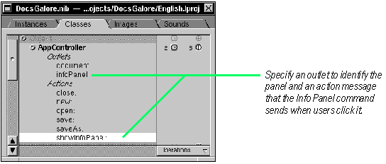

|
Most applications have nib files in addition to the main nib file. These auxiliary nib files serve some special purpose. Some nib files, like those for Info panels, are loaded once when first required. Other nib files hold documents, which are loaded as often as requested. This chapter describes how to create and manage multiple nib files.
Working with Interface Builder |
6
Working With Multiple Nib Files
Loading nib files dynamically: an Info panel
Displaying attention panels
Creating a multi-document application
Managing documents through delegation.
|
...to divide is not to take away.
 Percy Bysshe Shelly Percy Bysshe Shelly
Choosing each stone, and poising every weight,
Trying the measures of the breadth and height;
Here pulling down, and there erecting new,
Founding a firm state by proportions true.
Matthew Arnold
How many things I can do without!
Socrates

Multiple Nib Files: Good Things in Small Pieces
Why have multiple nib files in an application? Why not put everything in the main nib file? The answer is simple: Because multiple nib files enhance the performance of the application.
You can strategically store the resources of an application (including pieces of the interface) in several nib files. When the application needs a resource, it loads the nib file containing it. This technique of deferred allocation benefits an application greatly. By conserving memory, it improves program efficiency. It also speeds up the time it takes to launch the application.
When many sophisticated applications start up, they load only a minimum of resources in the main nib file--the main menu and perhaps a window. They display other windows (and load other nib files) only when users request it or when conditions warrant it.
Types of Auxiliary Nib Files
Nib files other than an application's main nib file are sometimes called auxiliary nib files. There are two general types of auxiliary nib files: special-use and document.
Special-use nib files contain objects (and other resources) that might be used in the normal operation of the application (like a Preferences panel). Document nib files contain objects that represent some repeatable entity, such as a word-processor document. A document nib file functions as a template for documents: it contains the UI objects and other resources needed to make a document.
Each type of nib file requires a different kind of object to load and manage its resources. For special-use nib files, the application-controller object usually suffices. But a document nib file needs its own controller, one that is tightly bound to the document.
File's Owner
The object that loads a nib file is usually the object that owns it. A nib file's owner must be external to the file. Objects unarchived from the nib file communicate with other objects in the application only through the owner.
In Interface Builder, the File's Owner icon represents this external object. The File's Owner is typically the application controller for special-use nib files, and the document controller for document nib files. The File's Owner object is not really appearing twice; it's created in one file and referenced in the other.
The File's Owner object dynamically loads a nib file and makes itself the owner of that file by sending loadNibSection:owner: to NXApp, the global application object.
How Multiple Documents are Created and Managed
You can think of a document as the objects and resources unarchived from a nib file and the controller object that loads and manages these things. In managing a document, the controller makes itself the delegate of its window and its "content" objects. It responds to delegation messages to track edited status, handle window-close events, and respond to other conditions.
When users choose the New (or equivalent) command, a method is invoked in the application's controller object. In this method, the application controller creates a document-controller object, which loads the document nib file in the course of initializing itself. A document thus remains independent of the application's "core" objects, storing state data in the document controller. If the application needs information about a document's state, it can query the document controller.


|
|
LOADING NIB FILES DYNAMICALLY: AN INFO PANEL |
|
1 |
Create the Info panel in Interface Builder. |
|
|
2 |
Specify an outlet for the panel and an action method for the application controller. |
|
|
3 |
Connect the Info command to the controller object. |
|
|
4 |
Assign the contoller object to File's Owner. |
|
|
5 |
Connect File's Owner to the outlet for the panel. |
|
|
6 |
Implement an action method that loads the Info panel's nib file. |
|
Many applications display some of their windows and panels only when users request them or when they are needed. An application loads and displays an Info panel, for instance, in response to a user request; it displays attention panels, on the other hand, when some internal condition in the application makes it necessary. By loading these auxiliary nib files only when they are needed, you can reduce memory usage and speed up the time it takes for your application to launch.
The steps you follow to create, load, and manage an Info panel are typical for special-use nib files. To make the panel in Interface Builder, choose the New Info Panel command from the New Modules menu (the New Modules menu is listed on the Document menu). Interface Builder displays a template panel and creates an UNTITLED nib file to contain it. Be sure to save the file (as, for instance, InfoPanel.nib).
The custom object that you create to control an application is typically the object that loads and manages an Info panel. You define the class of this object in the Classes display of the main nib file. When you do, specify the necessary outlet and action.

Chapter 4, "Creating a Class," describes how to add outlets and actions to your custom class, and shows how to connect them to instances of your class.
After you make an instance of the controller class, connect the action to the menu command.
You cannot connect the Info panel and the controller object in the main nib file because the panel is in the auxiliary nib file you created earlier. You must assign the controller class to File's Owner in the auxiliary nib file and then make the outlet connection between File's Owner and the panel. The first step in this direction is to insert the class definition of the controller class into the auxiliary nib file.
Next, assign the controller class to File's Owner.
Now make a connection in Interface Builder between File's Owner and the title bar of the panel. Select the outlet in the Connections display and click Connect.
The final step is to write the code (in the .m file of the controller class) that implements the action method invoked by the Info Panel command. |
- showInfoPanel:sender
{
if (!infoPanel)
[NXApp loadNibSection:"InfoPanel.nib" owner:self];
[infoPanel makeKeyAndOrderFront:self];
return self;
}
|
Notes on the code: Once an Info panel is loaded, it is typically kept in memory until the user quits the application. The code tests the infoPanel outlet to determine if the auxiliary nib file containing the panel has already been loaded. If it hasn't, it loads it with loadNibSection:owner:. It is important to specify self as owner (self being the object that implements the method). After ensuring the panel is loaded, display the panel by sending it the makeKeyAndOrderFront: message. |
|
DISPLAYING AN ATTENTION PANEL |
|
 |
Call NXRunAlertPanel(). |
|
|
Create an attention panel in Interface Builder and load it dynamically. |
|
When you can accomplish an end programmatically or in Interface Builder, the recommended course is almost always Interface Builder. A notable exception is displaying attention panels. You display attention panels to tell the user something about the current context (such as error that occurred), to clarify or complete an action the user is taking, or to give the user a chance to take corrective steps.
Displaying Attention Panels Programmatically
For most situations requiring attention panels, the easiest and most appropriate thing to do is call a function: NXRunAlertPanel(). In the following example, the application informs users that, because of hardware incompatibility, it cannot proceed: |
if(![NXLiveVideoView doesWindowSupportVideo:bufWindow
standard:&type size:&vidSize])
{
NXRunAlertPanel("No Video Present","This machine is not \
capable of running video applications.Since this program \
is exclusively for Video,It will now exit","OK",NULL,NULL);
[self terminate:self];
}
|
Notes on the code: The arguments of NXRunAlertPanel() determine what appears on the panel. The first argument is the heading (above the dividing line) and the second is the text (below the line). The next three arguments are the titles of the buttons that appear across the bottom of the panel. The first of these titles goes to the default button, which has a carriage return associated with it. You can remove a button by giving NULL as its title, but you must specify something for all three buttons The declaration of NXRunAlertPanel() permits a variable number of arguments, so you can have printf()-style format specifiers in the panel heading and text and variables following the third button argument.
The call to NXRunAlertPanel() in the example above creates the following panel:
Loading Attention Panels Created in Interface Builder
The panel created by NXRunAlertPanel() might not be adequate for certain situations. For example, you might want to display an attention panel that has a special View object, say one that shows the progress of some lengthy process (such as a progress bar for loading or copying files). And you want to give the user the options of aborting or pausing that process. You'd want something like this attention panel:
To implement a custom attention panel, start by choosing Document New Modules New Attention Panel. The remaining procedure is almost identical to the procedure for creating an Info |
|
 |
Compose the text, graphics, and other UI elements of the panel. |
|
|
Pick a custom class, typically the application's controller, to manage the panel. |
|
|
Specify the necessary actions and outlets for the controller class. |
|
|
Connect these outlets and actions. |
|
|
Drag the controller's header or implementation file onto the panel's nib file window. |
|
|
Assign the controller class to File's Owner. |
|
|
Load the attention panel's nib file with loadNibSection:owner:. |
|
There are some important differences between attention panels and Info panels. With attention panels, you typically load the nib file not as the result of a user action (for instance, clicking an Info Panel command), but because of internal conditions in your code. Also, you dismiss an Info panel by clicking its close box; you usually dismiss an attention panel by clicking a button on the panel. This means that, for custom attention panels, you will have to define and implement action methods for the buttons on the panels. (This is something NXRunAlertPanel() simulates by returning a code indicating the button clicked.)
The Application Kit defines two functions related to NXRunAlertPanel(): NXRunLocalizedAlertPanel()and NXGetAlertPanel(). For more information on all three functions, see the "Functions" section of Chapter 2, "Application Kit," in the NEXTSTEP General Reference.
Attention panels in NEXTSTEP should conform to the conventions described in "Implementing Attention Panels" in Chapter 5 of the NEXTSTEP User Interface Guidelines. |
|
CREATING A MULTI-DOCUMENT APPLICATION |
|
1 |
Add actions for creating and managing a document. |
|
|
2 |
Define a document controller class. |
|
|
3 |
Compose the document interface. |
|
|
4 |
Assign the document-controller class to File's Owner of the document nib file. |
|
|
5 |
Implement the document-creation method. |
|
|
6 |
Initialize the document controller. |
|
|
7 |
Implement methods for opening, saving, and closing documents. |
|
Many applications have the notion of a document, a template interface that users can create as often as they want. Users can also modify the contents of the document, save the document, and open it again later. Edit is a good example of a multi-document application. Creating an application with multiple documents requires a mix of Interface Builder tasks and code writing.
Adding Actions for Creating and Managing Documents
In typical multi-document applications, the main nib file doesn't contain any windows other than the application's menu. So the first thing you might want to do is delete all windows or panels from the main nib file. Then, select the Menus palette, drag the Document cell to the application's menu and insert it (usually between the Info and Edit cells). The Document menu holds menu commands for creating, opening, saving, and closing documents. Delete the cells that don't apply to your documents from the Document menu.
The object that responds to user choices in the Document menu should serve some general-purpose role for the application. In the Classes display, locate the class of the application controller--the object that manages the application. To this class, add action methods that the commands in the Document menu will invoke when users choose them.
As in the example above, it might be useful to add an outlet to identify the active document controller (document in the example). This outlet object is associated with the current main window.
After you add all required actions, connect the menu commands to the application-controller object in the Instances view.
Tip: The object that invokes a document-related action doesn't have to be a menu command. It can be a button, a text field, a browser--any Control object.
Defining a Document Controller Class
Another custom controller object--a document controller--loads and manages each document. The document controller also owns the nib file that contains the interface objects and other resources of the document. Since this object is the owner of the document nib file, it must be external to it. A good place to define and instantiate the document controller in Interface Builder is in the main nib file.
Define in Interface Builder a subclass of the root class (Object in the following example), naming it something like DocController. A typical document controller would do some of the following things: |
|
|
load the document nib file during initialization |
|
|
activate its document when requested by the application controller |
|
|
respond to delegation messages from the document's window |
|
|
if the document includes text, become the delegate of the Text object |
|
When you define the class, add at least two outlets to it. One outlet identifies a document's window (window in the example below) and the other identifies its content (text in the example).
Creating the Document Interface
To create your document interface, start by choosing the New Empty command (that is, Document New Module New Empty). This command creates a nib file for your documents. Select the Windows palette and drag and drop a window over the screen. Interface Builder adds the window to the nib file.
The contents of documents can be anything: text, graphics, forms, database tables. For our example, we'll create a text document. Drag a ScrollView object from the TextViews palette and size and position it to fit just inside the borders of the window.
Tip: If you want to have multiple fonts (including boldface and italics) in your document's text, drag the Font cell from the Menus palette and insert it in the application's menu. You must also select the Multiple fonts allowed option in the ScrollView's Attributes Inspector.
Assigning the Document-Controller Class to File's Owner
You cannot connect the document controller to the document's Window and Text objects from the main nib file because the interface objects are in a different nib file. To enable connection of the window and text outlets, you must assign the DocController class to File's Owner in the document nib file.
Begin by dragging the header or implementation file of the document-controller class into the document nib file. You can drag the files from Project Builder or from the Workspace Manager's File Viewer. This step adds the class definition to the nib file. Next, assign the class to File's Owner.
File's Owner now represents an instance of the document controller. Drag a connection line from File's Owner to the window's title bar; establish a connection through the window outlet. Drag other connection lines to the objects representing the window's content and establish connections (in our example, this is the Text object inside the ScrollView, which is identified by the text outlet). Also, drag a connection line from the window to File's Owner and make a connection through the delegate outlet. This connection makes the document controller a delegate of the window. Later, you will see how this connection makes it possible for the application to locate the controller of the currently active document.
Implementing the Document-Creation Method
This step and the next describe what to do to create a document. In the example, when a user chooses the New command from the Document menu, the new method in the application controller is invoked. In that method, the application controller begins the document-creation sequence by creating the document controller. |
// In AppController.m
- new:sender
{
document = [[DocController alloc] init];
[document activateDoc];
return self;
}
|
Notes on the code: The application controller creates a document controller--and in the process a document--by allocating an instance of the DocController class and sending init to it. It stores the object as an instance variable. It also ensures that the newly-created document is the currently active one by sending the document controller an activateDoc message. This message makes the window key, orders it front, inserts the cursor, and sets the document controller to be the delegate of the document's Text object.
Initializing the Document Controller
When the application creates a document controller in the code example above, the document controller's init method is invoked. In initializing itself, the document-controller object loads the nib file containing the document's interface objects and designates itself as owner of these objects. At this point, the document is fully created. |
// In DocController.m
- init
{
[super init];
[NXApp loadNibSection:"Document.nib" owner:self];
[text setDelegate:self];
return self;
}
|
Notes on the code: Given the file name in loadNibSection:owner:, the Application object looks for the nib file in the application bundle. When the interface objects are unarchived from the nib file, the controller's connections with its outlets (window and text) are established. Before it returns self, the document controller makes itself the delegate of the Text object (text) to receive notifications of editing.
Activating the Document
When users click among the windows of a multi-document application, the currently selected window automatically becomes the active document: The window is made the key window, it appears in front of all windows, and the cursor appears where you last left it. When you create or open a document, that document should be the active one, but this doesn't happen automatically. You have to write code to do it. The following is a typical method that activates a document. |
- activateDoc
{
[text setSel:0 :0];
[window makeKeyAndOrderFront:self];
return self;
}
|
Notes on the code: The message to the Text object (setSel::) puts the cursor at the beginning of the text (the arguments specify a range of character positions). This is appropriate for both new and opened documents. You could do other things within this method, such as setting delegates and attributes.
Closing, Saving, and Opening Documents
When users create a document, they want to put content into it and eventually save it. Later, they can open the document, edit it, and save it, or close it without saving the changes. Since most users have these expectations of documents, you should try to implement these operations in your code. The following examples of save, open, and close methods are suggestions; there are other ways of implementing these operations.
The close method below is invoked when the user clicks the Close command of the Document menu. This method simulates a click in the close box of the window. |
- close:sender
{
document = [[NXApp mainWindow] delegate];
if (document == nil) return nil;
[[document window] performClose:self];
return self;
}
|
Notes on the code: The performClose: message is sent to the window of the currently active document, simulating a mouse click in the close box.
Notice the message [[NXApp mainWindow] delegate], which returns the document controller (the delegate) of the current key (main) window. This message is important because it enables the application controller to send messages to the controller of the currently active document.
Below are example implementations of methods that open and save documents. The save method uses the SavePanel object to allow the user to save the document under a specific file name. The open method uses the OpenPanel object to let the user select the file to read into the document's content. |
- save:sender
{
int successful;
document = [[NXApp mainWindow] delegate];
if (document == nil) return nil;
[[SavePanel new] setRequiredFileType:"rtfd"];
successful = [[SavePanel new] runModal];
if (!successful) return nil;
[[document text] saveRTFDTo:[[SavePanel new] filename]
removeBackup:YES
errorHandler:nil];
[[document window] setTitleAsFilename:
[[SavePanel new] filename]];
return self;
}
- open:sender
{
int successful;
static const char *const types[] = {"rtfd", NULL};
successful = [[OpenPanel new] runModalForTypes:types];
if (!successful) return nil;
document = [[DocController alloc] init];
[[document text] openRTFDFrom:[[OpenPanel new] filename]];
[[document window] setTitleAsFilename:
[[OpenPanel new] filename]];
[document activateDoc];
return self;
}
|
The task "Loading nib files dynamically: an Info panel," which appears earlier in this chapter, illustrates how to add a class definition to a nib file.
See the next task, "Managing Documents Through Delegation" for details on tracking edited status as a delegate of a Text object, and for how to use the window's delegate and status to locate a document's controller. |
|
MANAGING DOCUMENTS THROUGH DELEGATION |
|
|
As delegate of Text object:
Track document's edited status. |
|
|
|
As delegate of window:
Respond to window-close events. |
|
|
|
As delegate of NXApp:
Handle application termination and the opening of documents in the Workspace. |
|
You can make your controller objects--both application and document controllers--delegates of certain Application Kit objects. Windows and Text objects, as well the Application object (globally identified as NXApp) send your designated delegates messages at critical junctures of processing. If your objects responded to these messages appropriately, they can affect the way your application handles documents.
Tracking Edited Status (Text)
Delegates of Text objects (and, by extension, TextField and Matrix objects) receive a series of messages, among them textDidGetKeys:isEmpty:. This message informs the delegate that typing just occurred in the interface object. In your implementation of this message, set the edited status of the window containing the Text object. |
- textDidGetKeys:sender isEmpty:(BOOL)flag
{
if ([window isDocEdited] == NO) [window setDocEdited:YES];
return self;
}
|
Notes on the code: The setDocEdited: message marks the window as having saved or unsaved content and modifies the close-box icon to indicate this.
If your document's information is in objects other than Text objects (including text fields and the cells of a matrix), you must determine another way to track edited status.
Tip: You can programmatically set your document controller to be the delegate of a Text, TextField, or Matrix object by sending setTextDelegate: to the object.
When Windows Are Closed
When users click a window's close box, the Window object sends windowWillClose: to its delegate, informing it that the window is about to be closed. Set your document controller object to be the delegate of the document window. In your implementation of the windowWillClose: method, display an attention panel to the user that asks whether the document should be saved.
The following example shows the a typical implementation. |
- windowWillClose:sender
{
int result;
// test for edited status first
if ([window isDocEdited] == NO) return self;
result = NXRunAlertPanel("Close",
"Doc has been edited. Save changes before closing?",
"Save then Close", "Close", "Cancel Close");
switch (result) {
case NX_ALERTDEFAULT: {
[self saveDoc]; // save the doc here
return self;
}
case NX_ALERTALTERNATE: {
return self; // close without saving
}
case NX_ALERTOTHER: {
return nil; // cancel close
}
}
return self;
}
|
Notes on the code: This method first checks to see if the document has not been edited; if this is the case, there's no need to save the document, so it returns self to tell the window to proceed with closing. It then displays an attention panel with NXRunAlertPanel(). Based on the button the user clicks, it saves the document (another method in this controller object), signals that closing should proceed without saving, or cancels the close operation by returning nil.
Application Delegation for Document Management
Your application controller can play an important role in document management by acting as the delegate to the global Application object. The Application object sends many messages to its delegate, and a couple of these are particularly relevant to documents.
When users double-click an icon representing your document file (one saved earlier by your multi-document application), two successive messages may get sent to your application's delegate. The first message, appAcceptsAnotherFile, requests if your application wants to open the double-clicked file. Respond by returning YES. The Application object then sends you app:openFile:type:, giving you the information necessary to open the file.
The following code example suggests one way of implementing these methods: |
- (BOOL)appAcceptsAnotherFile:sender
{
return YES;
}
- (int)app:sender openFile:(const char *)path
type:(const char *)type
{
if (strcmp(type, FILETYPE)) {
return FALSE; // not the same file type
}
[self open:path];
return TRUE;
}
|
Notes on the code: The implementation of app:openFile:type: determines first if the extension (the file type) of the double-clicked file is the document file type. It only opens the file if the file type is compatible.
You can easily register a document icon and file type in Project Builder. Drag an icon representing your document into the Document Icons and Extensions section of your application's Attributes display.
If you share a document file type with other NEXTSTEP applications, your document might not be given the first chance to open a double-clicked document file. The Workspace Manager first checks the applications in the Application dock, then in your /Apps directory, then in /LocalApps, and finally in /NextApps. So if you have a file type of "rtf," it's likely that Edit will open the file instead of your application.
The Application object will also send its delegate (your application controller) messages when the application is about to quit. It sends appWillTerminate: when the user chooses Quit from the main menu; it sends the delegate the app:PowerOffIn:andSave: message when the Workspace Manager receives a power-off event. In either event, the Application delegate should check all of its documents and save or explicitly discard each edited one.
This example shows how one Application delegate handles a power-off event. |
- app:sender powerOffIn:(int)ms andSave:(int)aFlag
{
poweringOff = YES;
if ([self hasUnsavedDocs]) [self reviewUnsavedDocs];
return self;
}
|
The object that ultimately sends delegation messages to the text delegate is the field editor, which is the Text object used to draw text in all Views of a Window that can hold text. For more information, see the specifications for the above-named classes in Chapter 2 of the NEXTSTEP General Reference.
See Chapter 2 of NEXTSTEP Development Tools and Techniques for further information on registering icons and file types in Project Builder.
See the Application class specification in Chapter 2 of the NEXTSTEP General Reference for details on appWillTerminate: and app:powerOffIn:andSave:. |